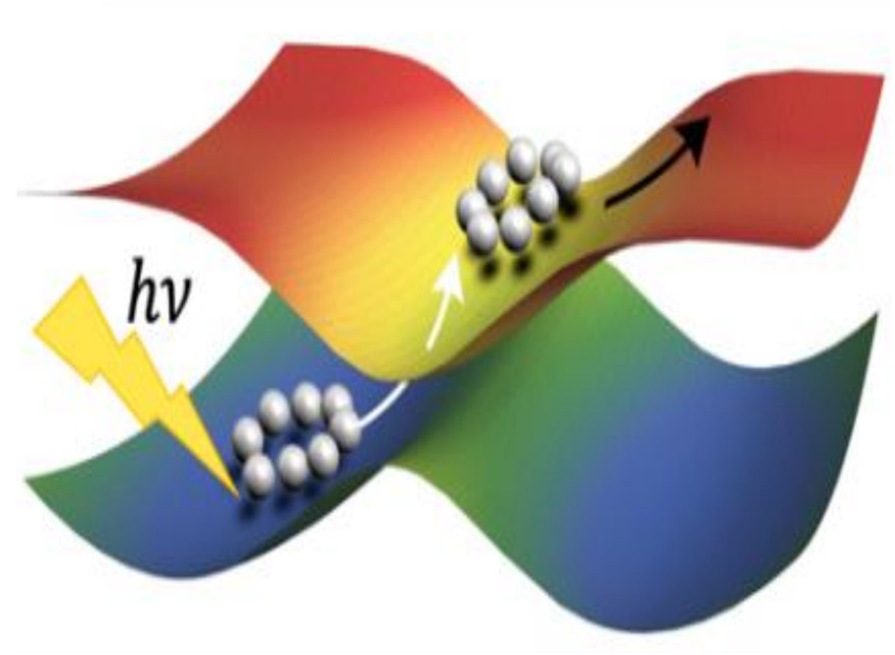

SHARP Pack
Getting Started:
Introduction
Installation
Models
Simulations
Theoretical Method:
Ring Polymer Surface Hopping (RPSH) Algorithm
Diagonal Born–Oppenheimer Correction (DBOC)
Decoherence
Tutorials:
Tutorials
Tully Model-I (FSSH)
Tully Model-II (RPSH)
Tully Model-III (Branching Probability)
Linear Chain Model
Spin-Boson Model (Debye Spectral Density)
Miscellaneous:
Change Log
Bibliography
SHARP Pack
Welcome to SHARP Pack Documentation!
Welcome to SHARP Pack Documentation!

Getting Started:
Introduction
Installation
Required Libraries
Compilation Steps
Models
Tully Models
Morse Potential Models
Linear Chain Model
Super Exchange Model
Spin–Boson Model
Spectral Density
Simulations
Keywords
Input File
Output Files
Population Calculation
Running Simulation
Theoretical Method:
Ring Polymer Surface Hopping (RPSH) Algorithm
Diagonal Born–Oppenheimer Correction (DBOC)
Decoherence
Tutorials:
Tutorials
Tully Model-I (FSSH)
Tully Model-II (RPSH)
Tully Model-III (Branching Probability)
Linear Chain Model
Spin-Boson Model (Debye Spectral Density)
Miscellaneous:
Change Log
Bibliography
{kind=link}